Espana ________________________________________________________________________________ A while back (man this has taken a while), I took a trip to Spain. It was important for many reasons, one of them being it was one of my first major vacations; I'd taken a trip earlier to Portugal in September 2023 that was far more leisurely, but this one was still quite massive. All told, we spent about two weeks between Barcelona and Madrid. Most of my interest was in the art museums. There are many other photos, but they aren't for you. Index ________________________________________________________________________________ - Barcelona [1.0] - Madrid [2.0] [1.0] Barcelona ________________________________________________________________________________ Technically, we started in Madrid; however, we almost immediately took a train to Barcelona to begin our vacation. So that's where we will start. Un callejón en BarcelonaCatedral de la Santa Creu i Santa Eulàlia
Arc de Triomf
Carrer de Trafalgar
Monument a Francesc María
Casa Battló - Gaudí's "magic house" (there's a lot of Gaudí in this trip) 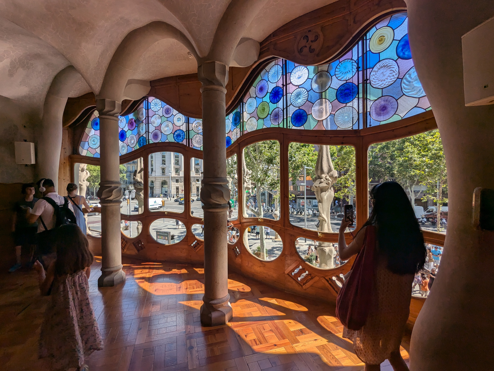 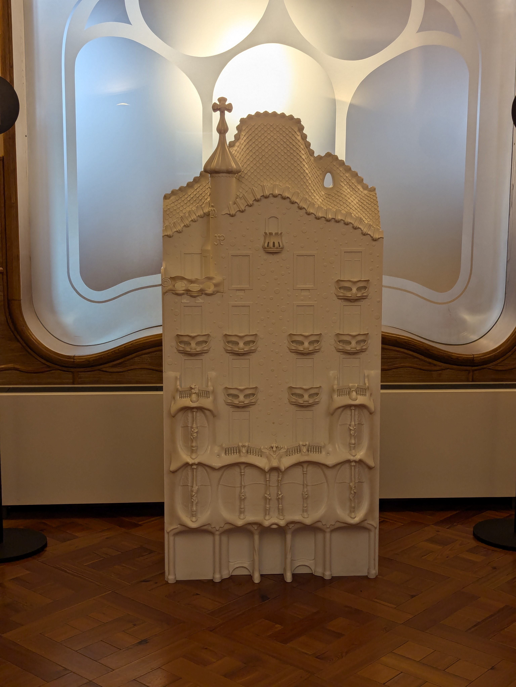 Comida - nos gusta comer
En la playa con churros, sangría, y... Agua. Sí. 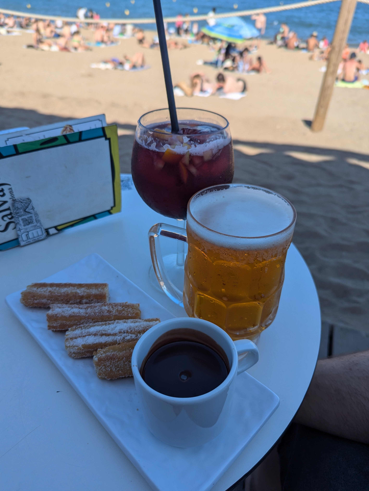 Tablao Flamenco Cordobes
Paella! Con langosta! Muy cara. 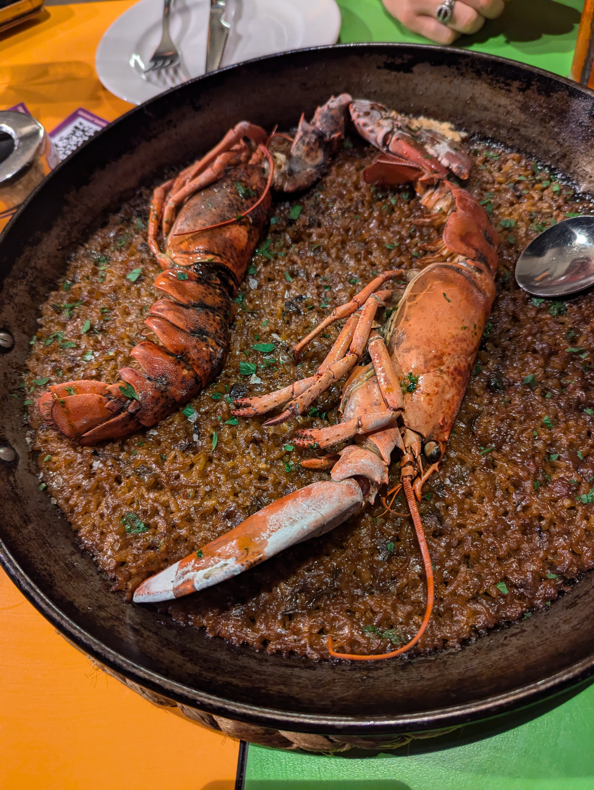 Plaça Reial
Parc Güell 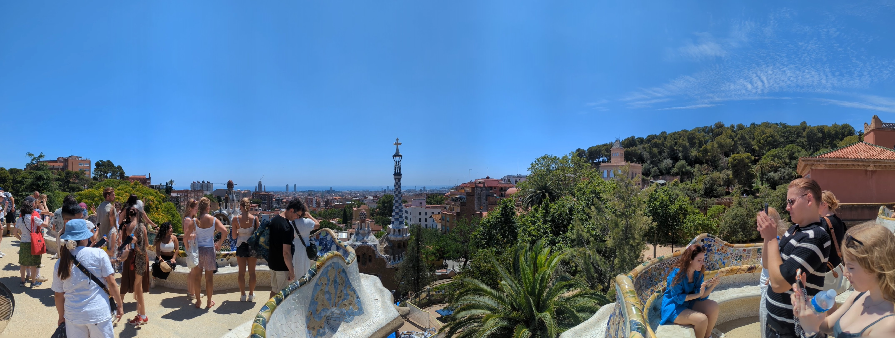 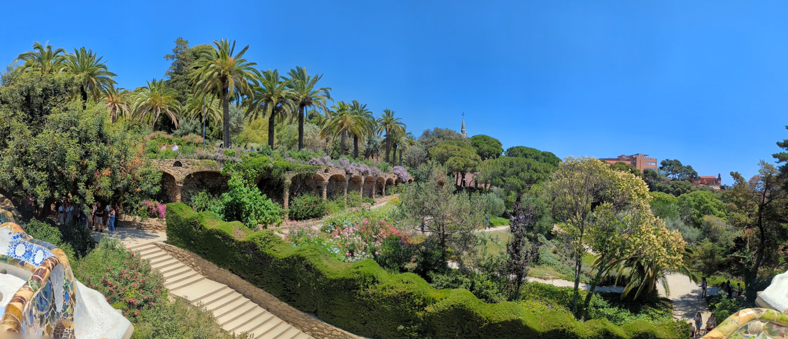

La Sagrada Familia - Casi terminado, obviamente. 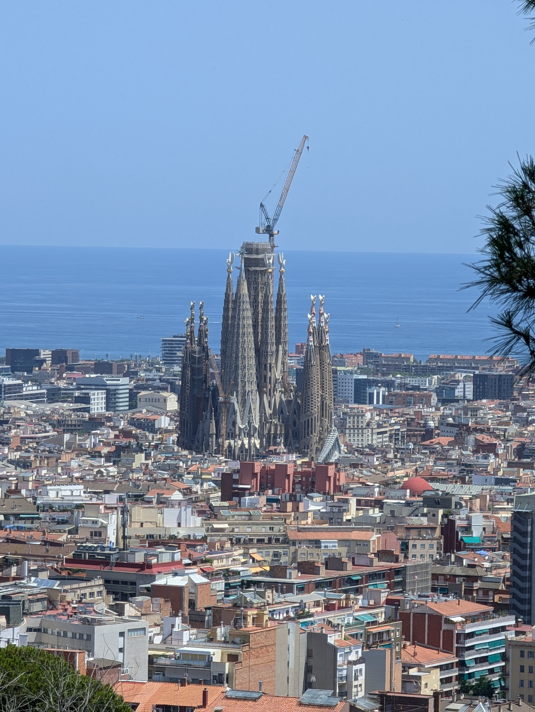 Hospital de Sant Pau - es muy importanta por la historia de Barcelona


La Sagrada Familia, de cerca!


Interior


Museu d'Arqueologia de Catalunya 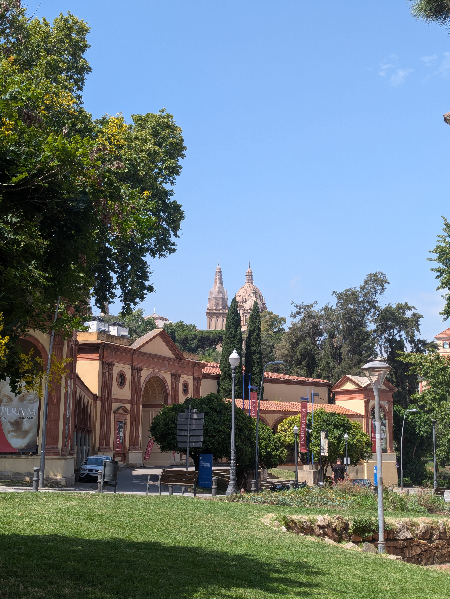 Museu Nacional d'Art de Catalunya 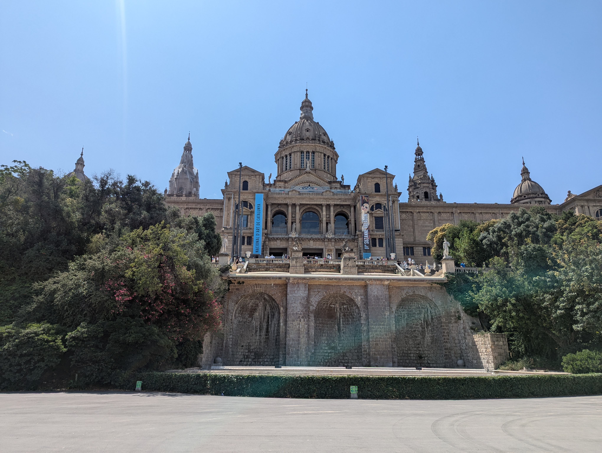 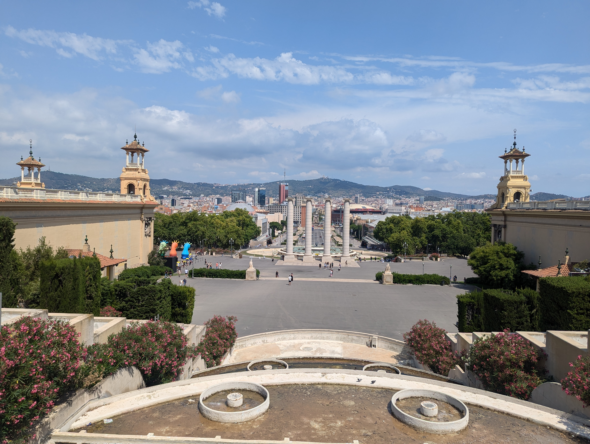

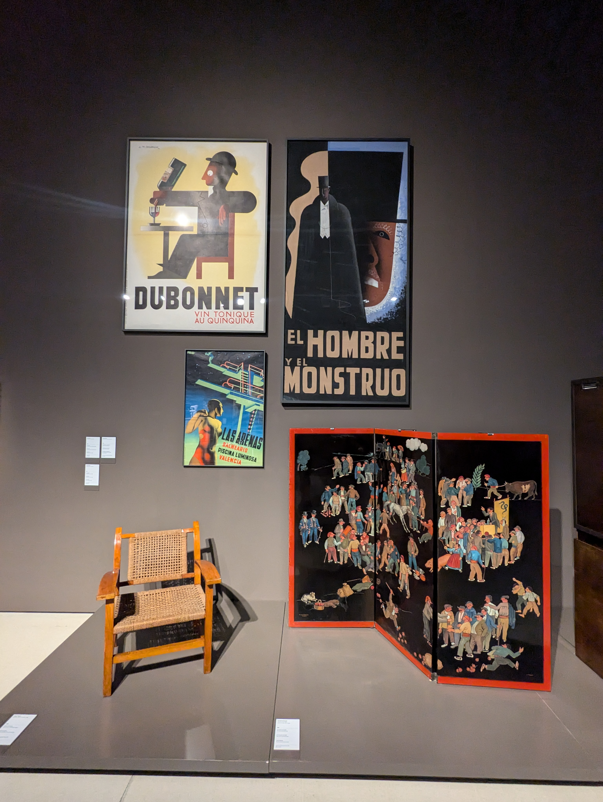 Joan Miró 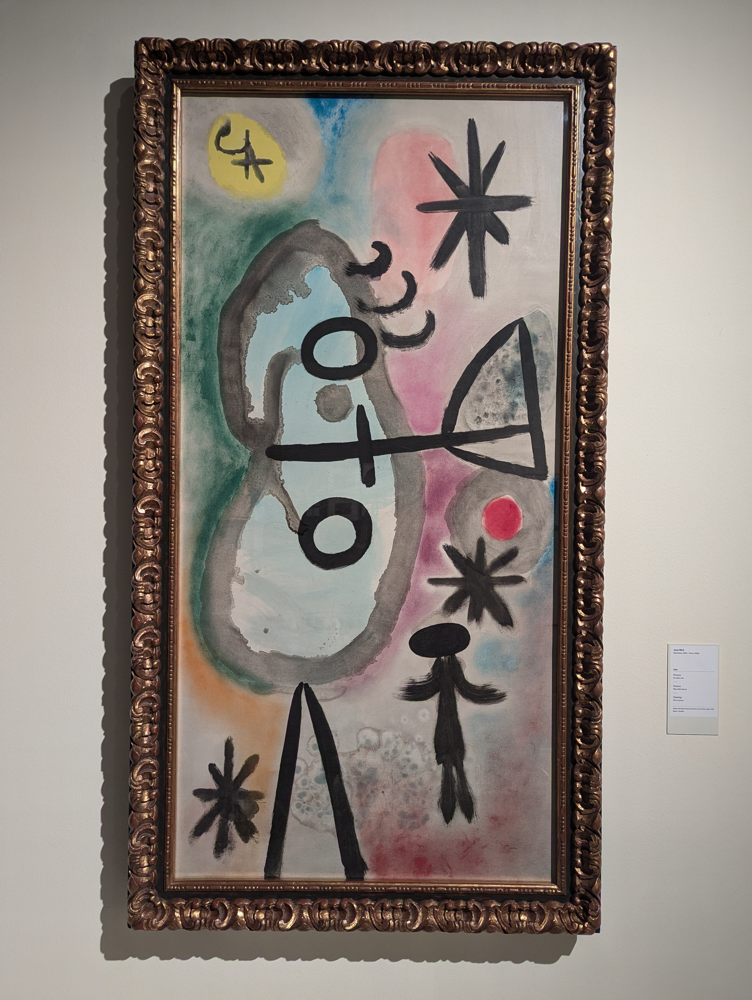 Mas comida
Salvador Dalí

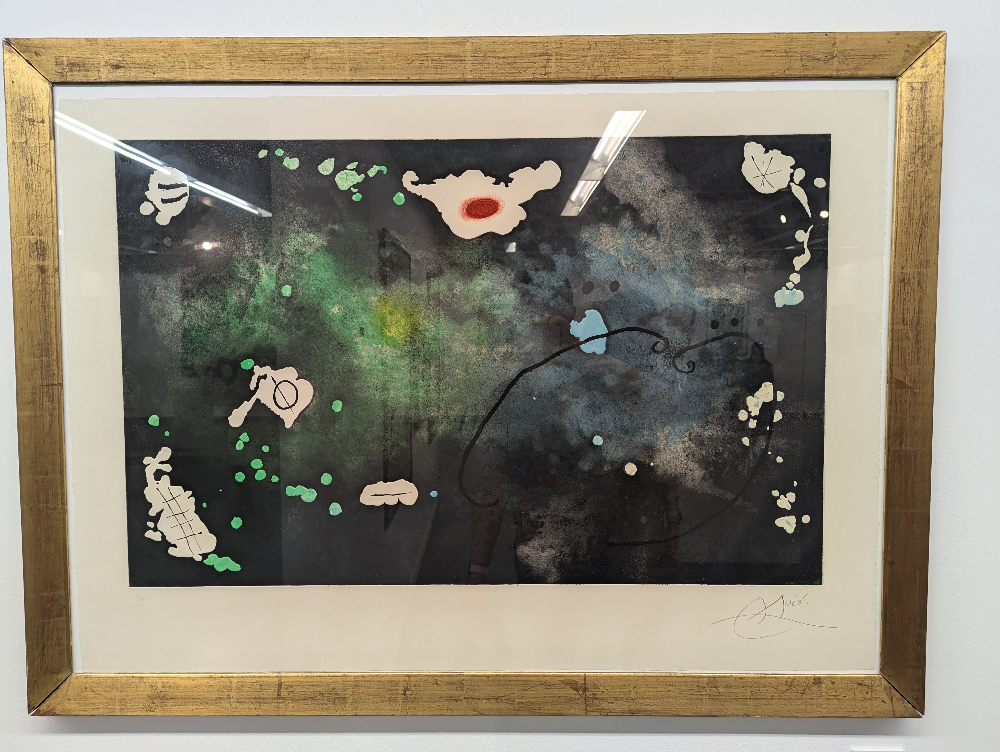 Tapas!

[2.0] Madrid ________________________________________________________________________________ Estación de tren de Madrid

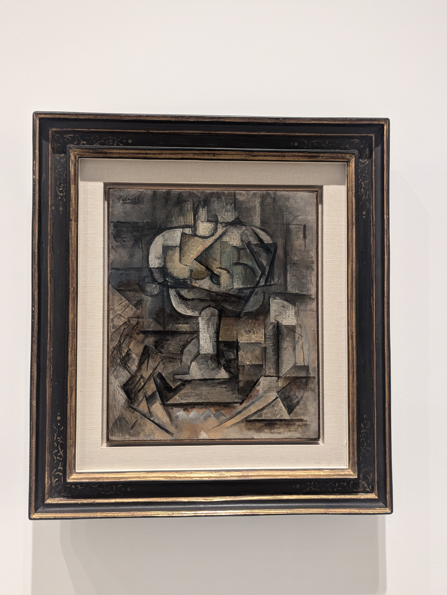 Guernica.
Mi comida favorita 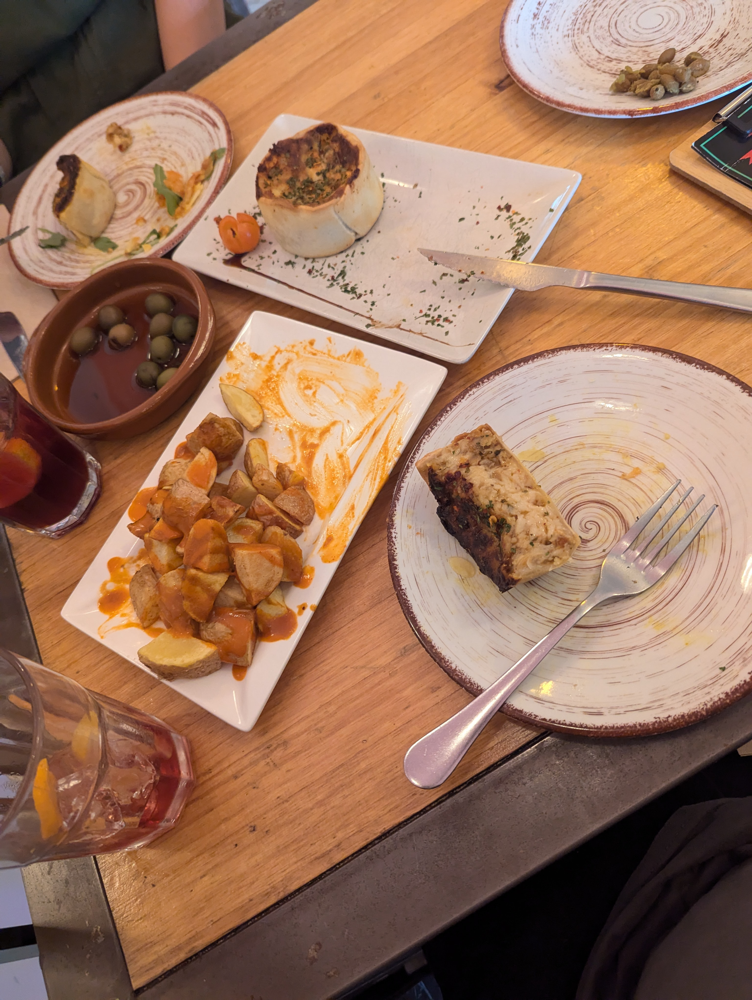
________________________________________________________________________________ Dilyn Corner (C) 2020-2025